Connectivity analysis.
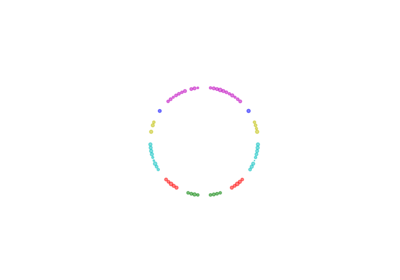
Plot degree circle

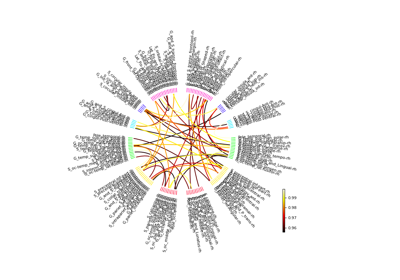
Plot Destriux Atlas
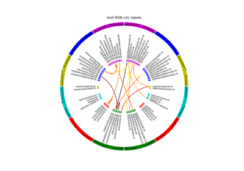
Plot labelled connectivity circle
Plot labelled connectivity circle
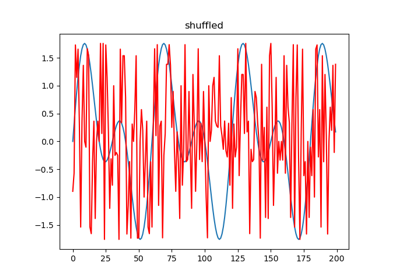
Plot surrogate methods
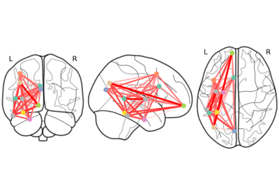
Plot brain connectome
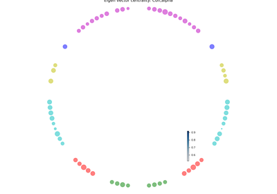
Plot centrality indices on connectivity circle plot
Plot centrality indices on connectivity circle plot
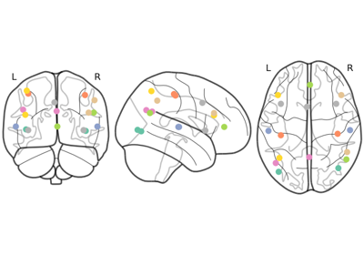
Visualise Standard RSNs
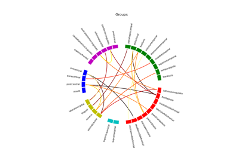
Generic Grouped Connectivity Circle
Generic Grouped Connectivity Circle
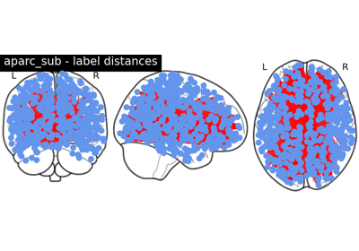
Compute Label Distances
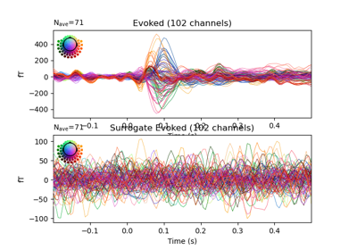
Surrogate Connectivity Generation
Surrogate Connectivity Generation
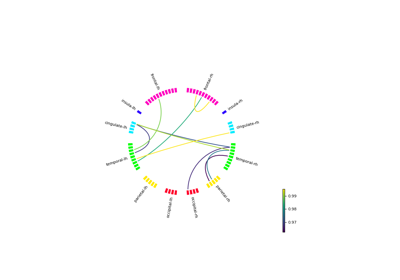
Plot grouped connectivity circle.
Plot grouped connectivity circle.
sphx_glr_auto_examples_connectivity_plot_test_transform_mni_to_ras.py
To plot a vertex point, convert it to MNI coordinates and then reconvert it back to RAS to obtain the vertex number.
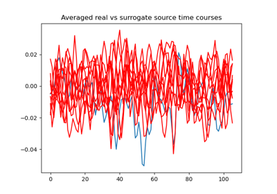
Generate surrogate STCs
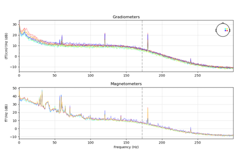
Shuffle channels’ data in the time domain and plot.
Shuffle channels' data in the time domain and plot.
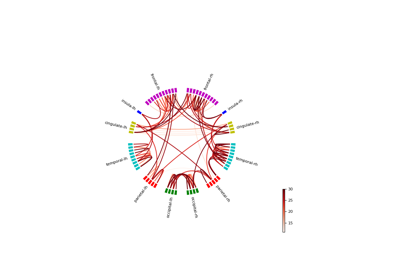
Plot label distances
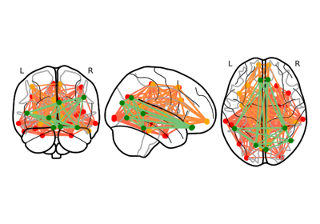
Plot network communities
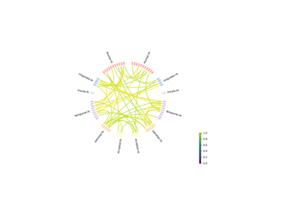
Plot Custom Grouped Circle
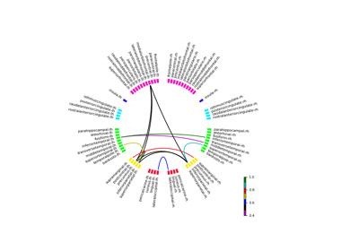
Standard RSNs on the connectivity circle
Standard RSNs on the connectivity circle
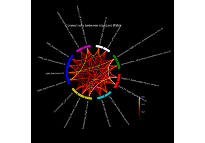
sphx_glr_auto_examples_connectivity_plot_connectivity_between_standard_rsns.py
Modified MNE-Python example script to show connectivity between standard

sphx_glr_auto_examples_connectivity_plot_generate_surrogate_connectivity.py
Surrogate computation
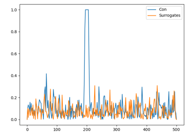
Simulating Connectivity